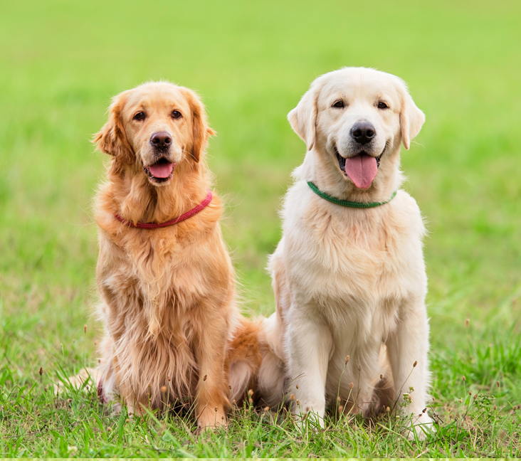
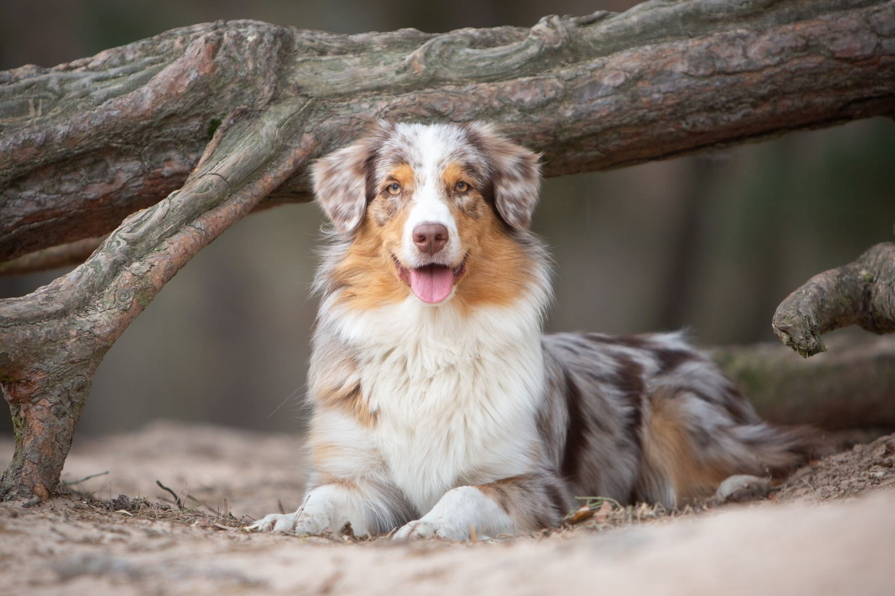

Golden Retrievers are medium to large-sized dogs with a dense, water-repellent coat that is typically golden in color. They have a broad head, friendly eyes, and a strong build. Australian Shepherds, on the other hand, are medium-sized dogs with a double coat that can come in various colors, including merle, black, red, and blue. They have a more agile and athletic build compared to Golden Retrievers.
This is a video about golden retriever and australian shepherd, you can click the link to watch the video and get more information about these two dogs.

Golden Retrievers come in various shades of golden, ranging from light cream to deep red. The most common colors are light golden, golden, and dark golden. The color of a Golden Retriever's coat can vary based on genetics and breeding, but all shades are considered standard for the breed.

Australian Shepherds come in a variety of colors, including merle (blue merle and red merle), black, red, and blue. They often have white markings on their chest, legs, and face. The merle pattern is particularly popular and can create a striking appearance with its mottled coat.